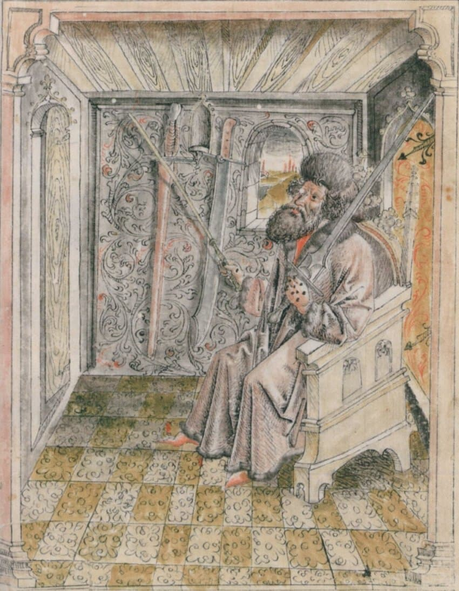
1611년 독일의 소드마스터 미하엘 훈트가 집필했으며
자신의 주군인 작센의 선제후 크리스티안 2세에게 헌정한 검술서가 있는데
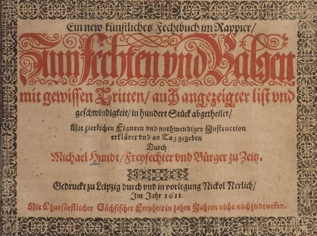
<새로운 레이피어 검술 교본>
총 100가지 검술 초식을 담은 명작
21세기 현재까지 검술 복원가들의 스테디셀러임
잠시 이 무공 비급을 살펴보자
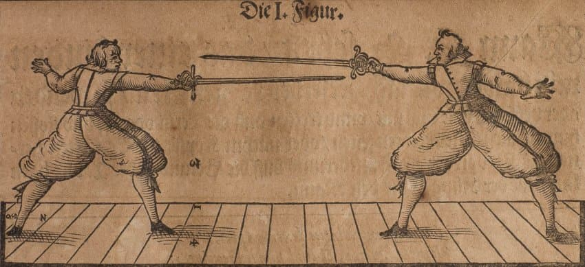
1초식. 머리를 겨눠라
초반은 평범함
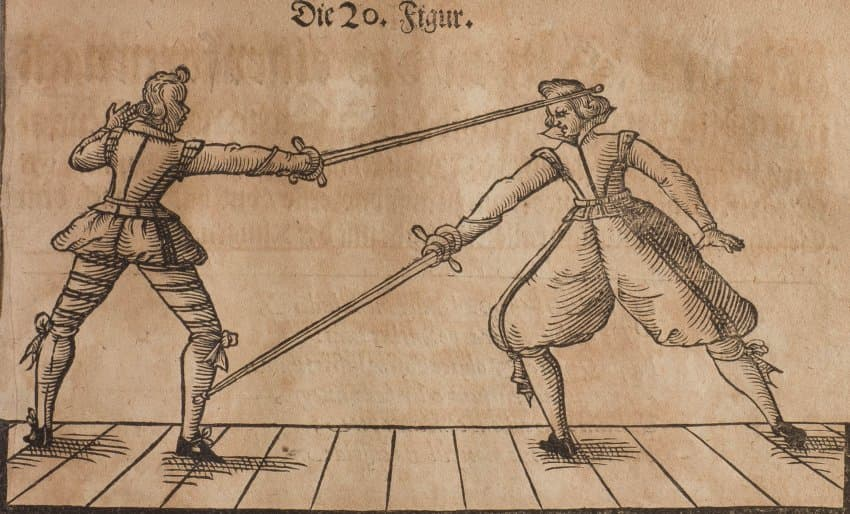
20초식. 머리 공격이 하단 공격보다 빠르다.
역시 소드마스터다운 통찰
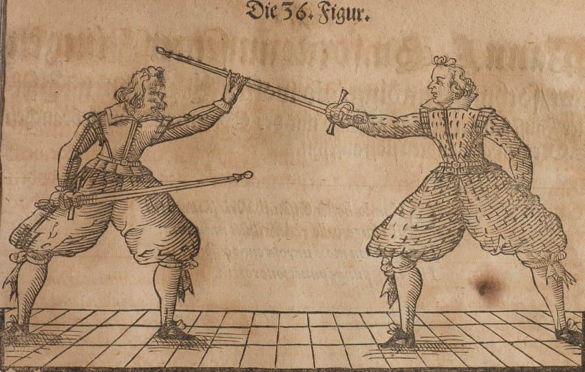
36초식. 상대 검을 제압하고 그래플링
체술도 신경쓴 소드마스터
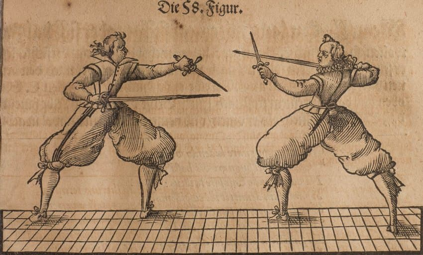
58초식. 빈손에 단검들기
여기부터 슬슬 비겁해짐
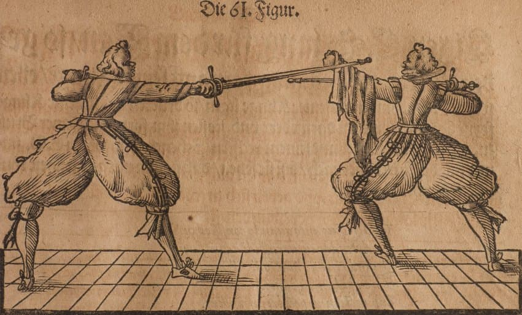
61초식. 망토를 방패처럼 써라.
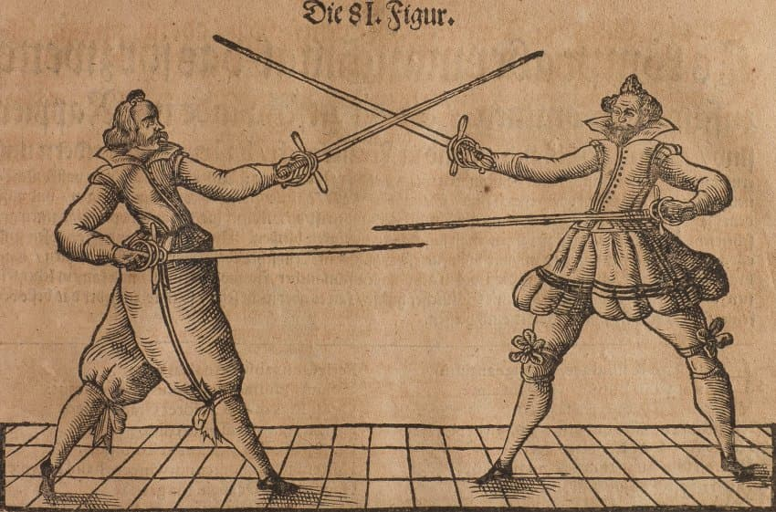
81초식. '쌍검술'
검이 두개면 두배로 쎄겠지
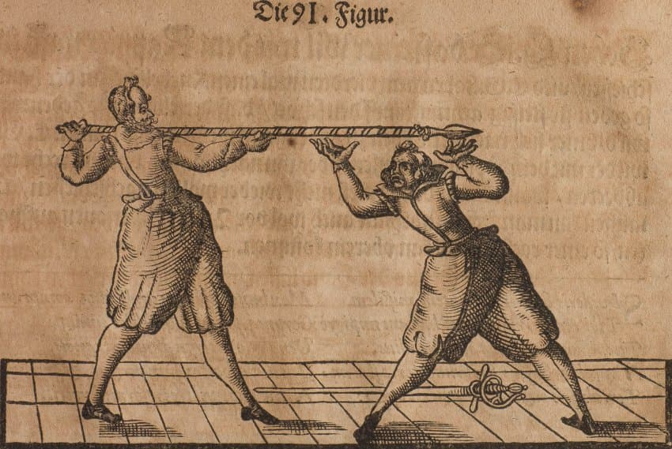
91초식. '창'
냉병기 최강. 이쯤부터 검술도 아님
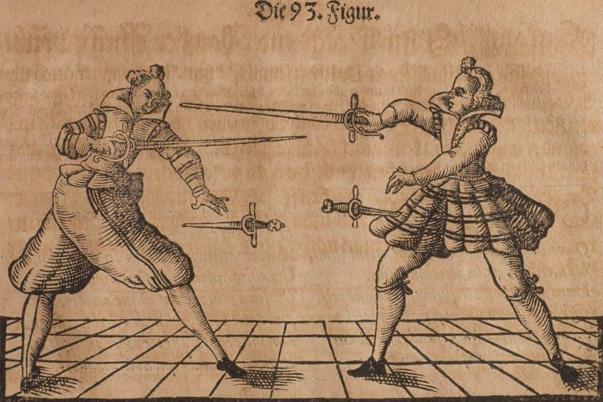
93초식. '단검투척'
원거리 나왔다
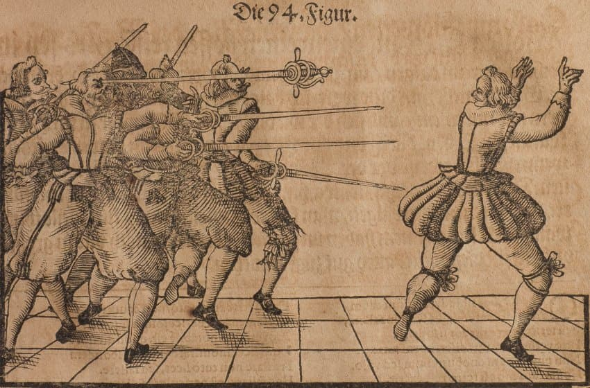
94초식. '다굴까 시발'
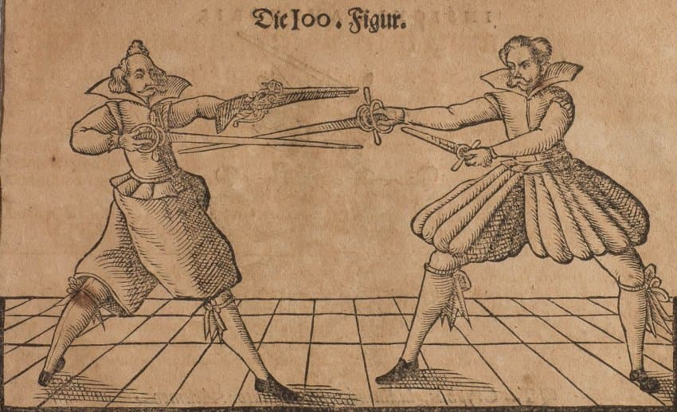
마지막 100초식. '권총'
"전하, 시대가 변했습니다."
소드마스터 최후의 비기는 권총이었다.
최강의 검술가다운 완벽한 교본이라고 칭찬받음
댓글
수집 당시 댓글 114개
· ㅇㅇ · 11.26 11:55:51
ㅇㅇ · 11.25 10:50:34
· ㅇㅇ · 11.26 16:15:00
ㅇㅇ · 11.25 10:52:21
Hamony · 11.25 11:04:50
하카라 · 11.25 11:05:17
· 하카라 · 11.25 11:05:44
· ㅇㅇ · 11.25 11:26:39
· ㅇㅇ · 11.26 02:12:38
ㅇㅇ · 11.25 11:42:17
ㅇㅇ · 11.25 12:37:46
ㅇㅇ · 11.25 12:42:29
ㅇㅇ · 11.25 12:44:02
ㅇㅇ · 11.25 12:58:31
· ㅇㅇ · 11.26 00:45:09
· ㅇㅇ · 11.26 02:12:55
· ㅇㅇ · 11.26 10:39:46
ㅇㅇ · 11.25 13:12:22
· ㅇㅇ · 11.25 15:08:28
· ㅁㄴㅇㄹ · 11.26 01:06:33
수류탄이야 · 11.25 13:43:55
ㅇㅇ · 11.25 15:02:14
OO · 11.25 15:50:11
ㅇㅇ · 11.25 19:00:22
· ㅇㅇ · 11.26 16:17:05
봇치쟝 · 11.26 00:30:48
· ㅇㅇ · 11.26 00:34:44
· 봇치쟝 · 11.26 00:42:14
ㅇㅇ · 11.26 00:31:59
ㅇㅇ · 11.26 00:32:04
ㅇㅇ · 11.26 00:32:29
히이잉 · 11.26 00:33:22
삭제됨 · 11.26 00:33:25
· 말랑보추 · 11.26 00:37:13
ㅇㅇ · 11.26 00:34:33
· つついあやめのおっと · 11.26 04:25:16
ㅇㅇ · 11.26 00:36:16
말랑보추 · 11.26 00:37:03
알카 · 11.26 00:37:25
ㅇㅇ · 11.26 00:38:23
ㅇㅇ · 11.26 00:39:38
LaDecimoquinta · 11.26 00:40:23
ㅇㅇ · 11.26 00:41:14
ㅇㅇ · 11.26 00:44:05
ㅇㅇ · 11.26 00:45:02
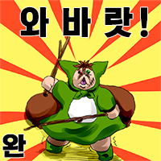
ㅇㅇ · 11.26 00:45:40
· ㅇㅇ · 11.26 01:38:19
· ㅇㅇ · 11.26 02:34:21
· ㅇㅇ · 11.26 03:11:06
· ㅇㅇ · 11.26 03:13:10
· ㅇㅇ · 11.26 04:30:39
· 2.1배TQQQ · 11.26 13:41:02
· ㅇㅇ · 11.26 16:17:10
· ㅇㅇ · 11.26 16:18:38
ㅇㅇ · 11.26 00:47:03
ㅇㅇ · 11.26 00:48:54
ㅇㅇ · 11.26 01:01:56
ㅇㅇ · 11.26 01:05:58
ㅁㄴㅇㄹ · 11.26 01:06:08
ㅇㅇ · 11.26 01:19:01
ㅇㅇ · 11.26 01:24:47
ㅇㅇ · 11.26 01:43:03
· ㅇㅇ · 11.26 02:14:34
히이잉 · 11.26 01:43:14
ㅇㅇ · 11.26 01:46:05
ㅇㅇ · 11.26 02:21:05
히이잉 · 11.26 02:31:17
ㅇㅇ · 11.26 02:39:02
· ㅇㅇ · 11.26 11:59:15
ㅇㅇ · 11.26 04:21:55
ㅇㅇ · 11.26 05:30:00
향격쳐 · 11.26 05:52:25
증거를친일천주새끼들 · 11.26 06:08:10
ㅇㅇ · 11.26 06:35:15
ㅇㅇ · 11.26 07:22:08
bookeater1 · 11.26 07:41:34
ㅇㅇ · 11.26 07:50:30
ㅇㅇ · 11.26 08:23:07
ㅇㅇ · 11.26 08:35:52
ㅇㅇ · 11.26 09:32:42
ㅇㅇ · 11.26 09:45:18
· ㅇㅇ · 11.26 09:55:59
ㅇㅇ · 11.26 09:56:12
ㅇㅇ · 11.26 09:57:34
· ㅇㅇ · 11.26 09:58:21
ㅇㅇ · 11.26 12:02:11
쿠다스 · 11.26 12:32:19
ㅇㅇ · 11.26 13:09:48
ㅇㅇ · 11.26 13:30:34
=빵= · 11.26 13:36:49
ㅇㅂㅇ · 11.26 15:14:42
piyo · 11.26 15:15:43
kawa · 11.26 16:11:57
ㅇㅇ · 11.26 16:14:16
· ㅇㅇ · 11.26 16:22:13
· ㅇㅇ · 11.26 16:24:06
· ㅇㅇ · 11.26 16:55:05
· ㅇㅇ · 11.26 16:57:45
ㅇㅇ · 11.26 16:32:31
ㅇㅇ · 11.26 20:52:09
방귀진동연구원수석박사 · 11.25 09:12:10
· 감전사 · 11.25 09:22:48
· 메기스플렛저 · 11.25 11:56:05
· 산데비스탄 · 11.25 15:00:19
ㅇㅇ · 11.25 09:13:12
· 야플 · 11.25 10:35:18
· 설탕물 · 11.25 11:30:55
· ㅇㅇ · 11.25 12:00:32
· ㅇㅇ · 11.25 13:08:08
· ㅇㅇ · 11.26 00:52:46
ㅇㅇ · 11.25 09:28:11
· 마공 · 11.25 11:20:49
· ㅇㅇ · 11.25 15:02:39
· dd · 11.26 09:47:26